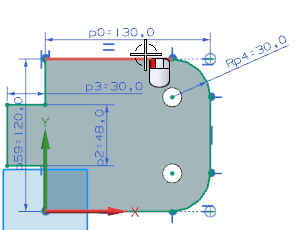
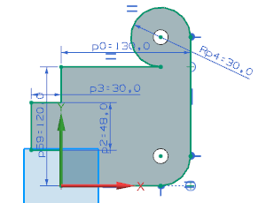
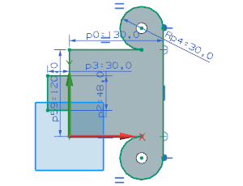
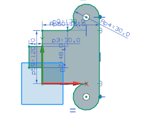
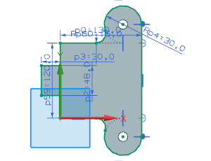

将相切几何体设为备选解
第二个设计变更是要您转换圆弧方向，并更新部件以确保可加工，部件中的孔必须保持与圆弧中心的约束。
-
选择如图所示的曲线。

NX infers the tangent arc and recreates the arc in the opposite direction. The hole remains constrained to the arc center.

-
NX 将自动判断相切圆弧，并在相反方向上重新创建圆弧，孔将保持与圆弧中心的约束。

-
点击直接草图工具条上的圆角 。
-
创建与下图相类似的 15 mm 圆角。

-
在部件相反侧使用相同方法创建圆角以完成草图。

-
点击直接草图工具条上的编辑草图时延迟更新
 。
。 -
按下 Ctrl-Q 以完成草图。
-
关闭部件。